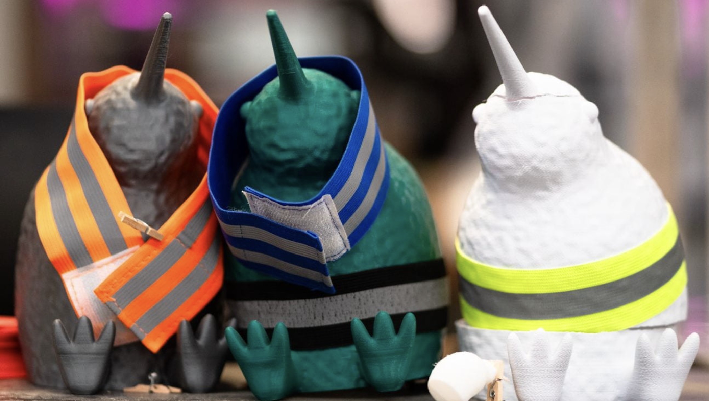

Affiliation · Prospective Peer Instructor
Georgia Tech Maker Spaces
An interest in hands-on fabrication, safe equipment use and helping other students develop practical prototyping skills.
Fabrication and prototyping
My current résumé lists me as a prospective Peer Instructor. My manufacturing experience includes CNC, 3D printing, laser cutting, tolerancing and rapid prototyping, applied through engineering projects such as Off-Road Racing and ME 2110.
I am interested in supporting a shop environment where students can translate CAD into physical components, use equipment safely and learn through iteration. This is a prospective role rather than a claim of formal instructor certification.
